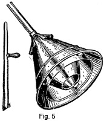
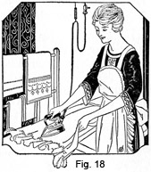

1931 - Laundering and Dry Cleaning
Woman's Institute of Domestic Arts & Sciences,
by Mary Brooks Picken
Equipment for Laundering
SELECTION OF EQUIPMENT
7. The selection of the articles that make up a laundry outfit is a subject that has much more import than is at first conceded. With the great number of labor-saving appliances that are from time to time put on the market, many of them presenting problems of mechanical apparatus, the question of which are the most practical and economical is one for consideration.
8. An advertisement or a salesman will present the good points of the articles represented, and these good points, to be sure, should all be weighed carefully; but there are other factors also that enter into the final selection. The amount of money to be spent, the space that can be devoted to laundry work, and the amount of washing to be done, all play their part as determinant features. Consequently, the quantity of new equipment that would be suitable and possible in one family will vary from that in another family.
9. Probably it is not necessary in some homes to invest in an entirely new laundry outfit. The old equipment may still be satisfactory with a little change. Perhaps the tubs have been at a back-breaking height, but will serve as well as new ones if reset properly. Or perhaps the resetting of the equipment will result in better light and the taking of fewer steps. Then, the remainder of the money to be spared for bettering laundry conditions can be put into adding a mangle, a drier, or some other device invented since this particular laundry was originally equipped.
10. Following are suggestions as to the articles that are practical for the work of the home laundress and the materials that are on the market. This information should prove of value in helping you to make the selections that will bring the greatest amount of satisfaction possible from the well-equipped laundry.
WASHING MACHINES
11. Value of Machines.—Perhaps there is no device among those of the housekeeper which saves so much valuable time and takes out so much drudgery from housework as does the washing machine. Even the ever-necessary vacuum cleaner must give place to the priority of the washer, which, if self-running, works at one task, doing it well, while the housekeeper does something else.
The real value of the washing machine must be computed in terms of time and energy saved, as well as in money. The actual investment takes into consideration the initial cost, the cost of operation and maintenance, and its approximate length of life. Another point to consider is the length of life of the materials that are washed. In considering this factor, remember that the machine in which friction is reduced to the minimum, saves wear and tear on the fabrics.
12. Kinds of Machines.—There are a great many different washing machines in use, and each claims a very satisfactory method of cleaning. Therefore, before you purchase a washing machine, you should make a study of the types in general use and, if possible, have a demonstration of each.
Of the types from which to make your choice, the four main ones are: the "dolly" machine, the cylinder or rotary machine, the oscillating or rocker machine, and the pressure and suction machine. Small-size washers of portable type are also available. All of these machines make use of some principle to force the dirt from the clothes into the soapy water. The principle may be friction, agitation, or pressure and suction; and the motion may be rotary or revolving, oscillating or rocking, and may be in one direction or reversible.
The motive power may be hand power, water power, gasoline engine, or electric motor. Although there is no doubt that the power machine is an improvement over the hand-power machine, the choice of a machine should be based not on this alone, but also on its action and the effect it has on the clothes as well.
13. The dolly type, which has a wooden dasher similar to a three-legged stool, cleans the clothes by rubbing them. The dasher revolves and reverses in the center of a tub, the sides of which are corrugated so that considerable friction results while the clothes are rubbed against the sides of the tub. Since the action of this machine is mostly agitation and friction, it is best suited to the cleaning of heavy garments and bedding, it being somewhat strenuous for dainty garments.
14. In the cylinder or rotary type, the clothes are placed in the inner one of two drums or cylinders, which is perforated and has little shelves, or cleats, that lift the clothes and drop them so that water is forced through them. After a few revolutions, the action is reversed. Since no friction is caused by a rotary machine, it is a practical investment and will prove a saving of energy as well as of wear and tear on clothing.
15. In the oscillating machine, there is a metal or wooden box, usually corrugated, which rocks back and forth and throws the clothes from side to side in the motion of a figure 8, placed sidewise. The water is thus forced through them, and the cleaning accomplished by this process. This type of machine is satisfactory for general family washing, but when operated by motor power it is a little severe for dainty lingerie or baby clothes unless they are first placed in a strong cheesecloth bag.
16. The pressure and suction machine, usually known as the vacuum washer, is probably the best type of washer for fine laundering and is still efficacious for the heaviest and dirtiest of garments. The cleaning is accomplished by vacuum cups, or metal cones, which change position with every downward stroke. The air contained in the cups forces the soapy water through the meshes of the garments on the down stroke, and on the up stroke, suction draws the water again through the meshes, carrying with it the soil.
The first mechanical application of the air pressure and suction principle of washing was made in 1878, when a hand plunger was attached to a wooden tub. Since that time improvements have been made, gradually changing the washer into its present perfected form. Fig. 4 illustrates a modern, copper, electric washer of the vacuum type with wringer attached. The up-and-down motion of the cups is shown by the dotted lines.
Another vacuum-cup machine has been invented, which is ideal from the standpoint of saving energy. The washer is so arranged that, when the clothes are clean, the whirling cylinder is flooded with clean water for rinsing. After rinsing, the water is drained off; then two or three minutes' additional whirling dries the clothes sufficiently for the line. Whirling the cylinder for a longer time makes the clothes ready for the ironing board without their being hung out at all. This is, of course, practical for rainy-day or apartment use.
17. For the business woman, the mother of small children, and the homekeeper who has a supply of fine underthings and linens that require frequent laundering, one of the small, portable, electrically driven washers is an excellent investment. Their capacity is limited, but in many cases this is an advantage because of the ease with which the small washing may be done.
18. Besides looking into the qualities of the various makes, consider also the relative merits of wood and metal machines. It is generally conceded that metal machines are more sanitary and hence more easily cared for than wooden ones. A simple scalding cleans a metal machine quite satisfactorily, whereas, with constant use, grime and bacteria are almost sure to collect in the fibers of the wooden machine. Wooden machines, moreover, warp and splinter after they have been used for some time.
19. Care of the Washing Machine.—Much saving in repair bills and a longer period of usefulness are possible when tools are well cared for. Consequently, as an economic measure, the housewife will do well to apply any of the following suggestions that are in accordance with the kind of washer that she uses:
- Oil regularly where needed.
- Tighten the bolts, and keep the belts at the proper tension if the machine is motor-driven.
- Do not overload the machine. Fill it with water to the level designated and wash the proper weight of clothes for the particular machine in use. The weight varies with different makes and sizes. Pamphlets containing information about these matters can be obtained from the washing-machine dealers.
- After using, rinse the machine thoroughly with hot water, preferably by operating it for a minute. Drain and dry it. Drying metal machines prevents much discoloration.
- Use soap and water to remove grease
or oil stains from the
machine. Scouring powders should be used with care on
metals to avoid injuring the surface. The following
methods may be used with safety:
- Aluminum—Wash with hot, soapy water, as alkalis darken aluminum.
- Copper—Rub with vinegar and a fine scourer, like whiting; polish with rottenstone mixed with oil; wash with soap and water; or wash with a preparation made by mixing 1/2 cup of vinegar, 2 tablespoonfuls of salt, and 2 tablespoonfuls of kerosene.
- Nickel—Moisten whiting with water or ammonia, rub, and wash with soap and water.
- Zinc—Use the same treatment as for nickel. Hot vinegar may be used for obstinate stains.
- In a wooden washer, keep water to a depth of about 3 or 4 inches when the washer is put away after use. This prevents it from drying, warping, and leaking.
- Between wash-days, keep the lid of wood-tub machines open 1 or 2 inches to allow free circulation of the air.
OTHER EQUIPMENT
20. Hand Plunger.—The hand plunger is really a miniature vacuum washer, consisting of a cone or an inverted funnel on a handle similar to a broom stick. Such a plunger, with detachable handle, is shown in Fig. 5. It is best employed as an aid in rinsing, since its use requires too much energy to consider it a satisfactory substitute for a washing machine. A portable tub set directly on the floor provides the most comfortable way to use it.
21. Tubs.—No matter what method of washing is followed or what other utensils are used, tubs, which are broad, open-topped vessels, are an essential in washing. They may be either portable, that is, capable of being moved from place to place, or stationary. To obtain the desired results from tubs, whether stationary or portable tubs are to be used, thought should be given to the service that may be expected from them as well as to the first cost.
Portable tubs are made of various kinds of materials, such as wood, galvanized iron, and fiber. They come also in a variety of sizes. A typical portable tub of galvanized iron is shown in Fig. 6.
Stationary tubs are generally made of soapstone, porcelain, or enameled iron. Those of white enameled iron have an advantage in that they reflect color readily and make it easy to detect rust or other stains, too much bluing, or bleeding of dyes in colored clothes.
22. The height of the tub should be considered to make comfortable working possible. In the securing of an easy height, place the tub sufficiently high so that the worker's back is straight and the forward bend is from the waist. Remember, too, that the working surface is not the bottom of the tub but the sloping side against which the washboard is placed, and take this into consideration in determining the desired height. Some authorities claim that a tub should be about 36 inches high for a woman 5 feet 5 inches tall, and others claim that this height is better for a woman 5 feet 3 inches tall, with an additional 1/2 inch added for each additional inch in height or subtracted for each inch under this average. These ratios, however, are only approximate, whether a woman has long or short arms or is long- or short-waisted largely determining the proper placement of a tub.
23. Wash Benches.—In the use of portable tubs, a bench is needed to hold them. Fig. 7 shows the old-fashioned bench made to hold two tubs. It is made in such a way that its presence on the back porch, when not in use, need not disturb the housewife who is endeavoring to keep her porch attractive.
A folding bench attached to a wringer standard is illustrated in Fig. 6. One side is shown folded up, while the other holds a tub and has its reversible drip board in position to transfer clothes from the wringer to the tub. Such a bench is highly satisfactory, as it not only is sturdy but also folds up into a small space.
24. Washboards.—Boards on which clothes may be rubbed are made of brass, zinc, or glass, the one in Fig. 7 representing the general appearance of these various types. There is very little choice between the metal and the glass, so long as the metal has no sharp points that might catch and injure the fabrics, and the glass is not treated in such a way as to break it. The rougher, zinc boards remove dirt more quickly, but are more likely to injure delicate fabrics.
A new type of washboard has stiff bristles on the surface, over which the clothes are rubbed. If you have used the small stiff-bristled brushes to clean soft collars and other especially soiled spots, you will readily understand the virtue of such a board.
Small suction caps, made especially for the purpose and very inexpensive, may be purchased and attached securely to each foot of the board to keep it from sliding around in the tub.
25. Wringers.—A clothes-wringer is an appliance having adjustable rollers, usually rubber covered, and used to press the water out of clothes after washing. Wringers come under various trade names and in different sizes, and each has its particular merit. Also, they may be run by either motor or hand power. The kind that is clamped on to a tub is shown in Fig. 7, and the motor power type is shown in Fig. 4. Be very careful in your selection of a wringer so as to obtain one that will give the greatest satisfaction for your particular needs. One with a reversible drip board is best.
Not only do wringers save time and energy, but they prevent a great deal of strain that would result if the material were hand wrung. To use a wringer correctly, take care to fold the garments evenly, turning all buttons to the inside. Also, be careful about the tension, as too tight pressure will make wrinkles that are hard to remove, and a little moisture left in the materials will leave more chance for the action of the sun and air.
26. To lengthen the period of serviceability of a wringer, give it proper care. Oil it frequently, and remove any black grease that may have accumulated. Also, release the screws when the wringer is not in use so that the rollers will not become flat, remembering, when you tighten the rollers again for use, to turn the screws on both ends at the same time so as to make the pressure even.
If a gummy substance collects on the rollers because of the use of hard water, remove it by rubbing them with a cloth dampened with kerosene. Then wash the rollers quickly with soap and water, as kerosene is harmful to the rubber if allowed to remain on it. When not in use, besides loosening the tension, cover the wringer to protect it from dust.
27. Boilers.—Receptacles used for boiling clothes may be either round or oblong, the oblong being the more practical as they hold more clothes and fit the stove better. Fig. 8 shows an oblong boiler with a fitted cover that can be used or removed in sections.
Boilers are made of tin, tin with copper bottom, and all copper. Those made of copper are preferable because of their superior wearing quality. Moreover, when they are used, there is less danger of the forming of rust spots on the clothing. Another point in their favor is that this metal transmits heat more readily than does tin. Do not make the mistake of boiling clothes in galvanized tubs, pans, or buckets, as a scum, which is very difficult to remove from clothes, often rises as a result of the contact with the galvanized iron.
Clothes-boilers may be preserved and kept free from stains by the same methods as are recommended for washers in Art. 19 (5).
28. Clothes-Baskets.—Baskets in which to carry wet clothes to the line are made in various sizes. In purchasing one, choose the proper size for your purpose and make sure of strong construction. Notice especially that there are no loose ends of the reed of which the basket is made, for dainty garments will catch on such rough ends and tear.
Clothes-hampers for holding soiled clothes until wash-day also are made in various styles and sizes and always have a cover. These hampers may be of reed, paper mache, or metal, the latter two kinds, of course, being more sanitary, provided they are properly ventilated. Laundry bags may be used instead of hampers, if desired.
Clothes chutes sometimes have a box built at the bottom to hold the clothes. Such boxes should always be at least 12 inches off the floor, and should have a fine, latticed bottom and auger holes bored in the sides to allow for ventilation.
29. Clothes-Lines.—Clothes-lines may be of hemp rope, galvanized wire, or wire covered with cloth. Rope lines are the cheapest, and wire lines the most durable, although in time they are likely to become corroded and stain the clothes. Whatever the nature of the clothes-line, to lengthen its utility and to keep it clean, it should be taken in after every wash-day.
In Fig. 9 is pictured a clothes-line that winds up inside of a metal container, which is attached to the wall. Its advantages can readily be seen, for it can be used indoors without taking up any room when not in use and it can be used outdoors with the same advantage and without accumulating dirt.
30. Clothes-Pins.—The wooden clothes-pins in general use are most satisfactory for securing clothes to clothes-lines, but there is also a wood and metal-wire clothes-pin that holds together firmly by means of a spring and is advantageous for outdoor drying on a windy day. The latter kind is shown in Fig. 10.
It is very necessary that clothes-pins be kept clean; otherwise, they will leave black marks where they come in contact with wet. materials. Frequent washing, therefore, is essential, as is also storing in dust-proof places. If a clothes-pin apron or bag or any other open receptacle is used, the top should be folded over or pulled tight to keep all particles of dirt away from the clothes pins.
31. Clothes-Driers.—Nothing is better than sun and air for the drying of clothes, but there are times when these agents are not available. For homes having very little outdoor space or for use indoors during stormy or freezing weather, clothes-driers of various types have been invented.
One excellent type of drier for a small room is a light drying rack that can be pulled up against the ceiling where an oblong box holds it. For service in a small space, there are also several kinds and sizes of umbrella-shaped driers. Some are constructed so that a pole in the back yard supports their radiating arms in sunny weather, and sockets on the wall support the arms for service at other times. One type, called the hill drier, is illustrated in Fig. 11. It folds up so that a sack can be slipped over it to keep the rods clean when not in use.
In the home where a fairly complete laundry is possible, a combination drier and stove, as shown in Fig. 1, is the most efficient. In such a drier, the heat passes through from the stove just as hot air passes around the oven of a cook stove. The stove holds the wash boiler, the irons, and the starch kettle.
{kind=link}
32. Some homes contain a drying room, which is fitted with heating pipes and which is located adjoining the laundry or kitchen. With such a convenience, the one precaution necessary is to be sure to have the room well ventilated in order to carry off the steam, for it is the congestion of steam in a drier that yellows clothes. The objection that an enclosed indoor drier does not keep clothes white is not true, if the drier is sufficiently ventilated and the clothes are adequately rinsed.
33. Ironing Boards.—In the selection of an ironing board, space and stability are the important considerations. The average homemaker may choose one of three types: a board made with a self-supporting stand that folds up, as shown in Fig. 12; a plain skirt board, which requires a table or support of some kind; or a board that is hinged to the wall and has a folding prop as a support. The latter kind can be concealed behind a panel.
If a new home is being planned, in which a whole basement room can be devoted to laundry equipment, there is probably no more satisfactory ironing board made than the one on a metal standard which is set in the concrete floor. This eliminates entirely any possibility of a "wobbly" board. Some makes of these must be installed when the house is built, while others can be added to any laundry room or space.
Whatever kind the board is, it should be substantially built so that it stands firm. Also, it must be of the proper height for the worker. As practically all stands are adjustable, it is an easy matter to place the board at a height that will be correct for you. As you stand erect, have the board just high enough for the palm of your hand to lie flat on the board when your arm is held straight down without bending the elbow.
Consider also the position of the supporting arm underneath, and choose a board that does not have arms so arranged that a skirt placed over the board has its lower edges rumpled by the time the ironing is completed.
34. For padding, avoid a cushion-like surface, but have the board padded so that there will be no spring to it. Heavy felt or double-faced cotton flannel or silence cloth like that used on tables makes a good pad. Old blankets also make excellent coverings. Particular care is necessary to have no wrinkles in the padding, as these leave undesirable shiny streaks on garments pressed over them, particularly wool garments.
35. For the ironing sheet over the padding, new unbleached muslin that has been washed to remove all dressing, is very good, or worn sheets may be used, though they do not last long as a rule. One should have at least two ironing sheets so that they may be changed often, as frequent washing not only insures a clean board, but lengthens the life of the covering.
The top covering should be large enough to cover the board entirely and lap over onto the under surface an inch or two. There are various ways of fastening, but preference should be given to the method that permits ease in changing the coverings and does not require much time. A very successful plan is to have brass or ivory rings sewed to one edge about 6 inches apart. Then, on the opposite edge at corresponding points, sew tapes with ends long enough to reach across under the board, through the rings, and tie.
36. To protect large pieces, such as table-cloths, from falling to the floor, a deep pocket of muslin may be attached to each side of the ironing sheet so that it extends from end to end of the board and within 6 or 8 inches of the floor, as in Fig. 13.
Cut the pocket from unbleached muslin or a similar material, having it about 40 inches square, finish the edges with a narrow hem, and sew a loop of tape or a metal ring at each corner. Attach small metallic or stiff wire arms underneath the board so that when these are swung out the tapes may be placed over them, as at a and b. When not in use, the arms may be swung back underneath the board.
37. Iron stands on which to rest the iron when not in use, are necessary on all boards, the permanent attachable metal stand being much more satisfactory than the wrought-iron stand or inverted tin covers, both of which have a way of slipping off the board.
It is advisable to cut a piece of sheet asbestos to fit the broader end of the ironing board, and fasten the edges down with thumb-tacks. This prevents scorching the ironing sheet when the iron stand becomes hot. Sometimes pieces of tin about 8 inches wide are tacked across the board in place of asbestos, but care must be taken to cover the edges so that garments cannot possibly become caught and torn.
38. Irons.—There are various types of irons; the old-fashioned stove-heated flat, or sad, iron made entirely of iron, irons with removable wooden handles, also electric, gas, gasoline, charcoal, and alcohol irons. Although the old-fashioned, stove-heated iron can do its work efficiently, it cannot bring the comfort and ease to an ironer that a self-heating iron can. The woman who employs a self-heating iron does not have to consider saving steps, for instead of ironing near a hot stove or going back and forth to exchange a cold iron for a hot one, she can iron in one spot, and that a comfortable one. The type chosen, however, will depend on the facilities available for heating, but it is well to know the outstanding characteristics of each type.
39. Among the stove-heated irons, flat irons with patent wooden handles and facing of steel, Fig. 14, are more modern than the old-fashioned irons of wrought iron, the most modern style having a removable handle and upper casing, as has the iron in Fig. 17. Such irons, which are likely to wabble, do not hold the heat so well, nor are they made in so many different shapes as the wrought-iron ones. They are, however, easier on the hands. Irons of both types are usually purchased in threes to allow for a sufficiently frequent change of iron.
40. Among the self-heating irons, there is the gas iron, which is illustrated in Fig. 15. The rubber gas pipe of this iron is one of the greatest drawbacks in ironing by gas. This pipe will be safer and give greater service if wound with spiral wire to prevent twisting and cracking. Then, too, it is necessary to beware of drafts that may fan the flame when a gas iron is in use.
In the use of gasoline and alcohol irons, the same precaution must be taken in regard to drafts. Also, there is danger from fire when leaks appear in the tank.
In charcoal irons, the fuel gives out an even heat, but not an intense enough heat for continuous ironing. Also, the fumes are unpleasant and the fire is dangerous and soot-giving if fanned the wrong way.
 Although the electric iron, Fig. 16, is generally preferred, a few cautions
in its use are necessary. The electric cord should be watched, for if any
wires break there is danger of shock and fire. These breaks can be mended
with adhesive tape when the current is disconnected. An electric iron should
not be allowed to become overheated from too constant use. Instead, the power
should be
turned off occasionally. Another caution is that a current of sufficiently
high voltage should be used where an electric iron, or, in fact, any other
electrical appliance, is attached, so that fuses will not be constantly burning
out. Also, no other electrical appliance should be attached to the same connection
by means of a double socket, while an electric iron is in operation for their
combined demands are likely to burn out the fuse.
Although the electric iron, Fig. 16, is generally preferred, a few cautions
in its use are necessary. The electric cord should be watched, for if any
wires break there is danger of shock and fire. These breaks can be mended
with adhesive tape when the current is disconnected. An electric iron should
not be allowed to become overheated from too constant use. Instead, the power
should be
turned off occasionally. Another caution is that a current of sufficiently
high voltage should be used where an electric iron, or, in fact, any other
electrical appliance, is attached, so that fuses will not be constantly burning
out. Also, no other electrical appliance should be attached to the same connection
by means of a double socket, while an electric iron is in operation for their
combined demands are likely to burn out the fuse.
41. In the choice of suitable irons, besides considering the types of irons, one must know that irons are made also for different kinds of work. For example, small irons are used for tiny, fine pieces; narrow, pointed irons, one of which is shown in Fig. 17, for garments on which there is shirring, fluting, or like trimming; and very large, heavy irons, for tailoring. If only one iron is to be purchased, it should be of average size, one that weighs from 6 to 8 pounds. Too light an iron necessitates more pressure brought to bear on it. Since the point has the most work to do, another matter to consider in the purchase of an iron is that the point should heat quickly and retain its heat well.
An electric iron may be tested for the time required for heating and for the evenness of its heating surface, by standing it on a well-protected heavy piece of paper and then turning on the current and letting it run without moving the iron. The time required for heating and the evenness of the scorched spot will furnish the desired information.
42. Among the appliances that lighten the labor of ironing and contribute toward convenience is the device illustrated in Fig. 18. It is a spring that is suspended on a cord and that has a hook to hold the cord of the electric iron so as to keep it from rubbing back and forth over the ironing board and rumpling and soiling the articles that are being ironed.
In the illustration is shown also the electric fixture to which the iron is attached. When the double socket, Fig. 19, is screwed into the fixture, the iron can be attached to one socket and an electric bulb to the other, thus utilizing one fixture for two purposes.
43. Old-fashioned irons and sometimes irons with removable wooden handles require iron holders. These should be oval in shape so that there will be no corners to touch the iron and become burnt. Also, holders should be sufficiently thick to keep the heat from penetrating. Ticking and asbestos are used in the ready-made holders, but folded stockings covered with ticking, denim, or other stout material make good holders. Wool does not make a serviceable covering, as it soon becomes charred.
The alternate use of two holders will be found comfortable, as cool holders will keep the hands from becoming parched or swollen from continual heat.
44. Mangle.—A mangle is an ironing machine that has rollers, either hand-turned or power-turned, working on the principle of the wringer. The cheapest, as to both cost and operation, are cold mangles that press the materials between unheated wooden rollers; but these machines do not press clothes dry and glossy and sterilize them; nor are they always able to take out all wrinkles. They are little better than wringers, except that they are larger, and after they have done their best, the articles must be hung up to dry.
Heated mangles have two rollers between which the articles are put. One end is usually open to admit garments. There are different sizes, the most satisfactory for the majority of homes being the size that irons large sheets after they have been folded once. Such mangles are a great time and labor saver in homes where there are large families and hence large washings, but they are rather expensive to purchase and install, so are not, for the small family, an economy in money. Mangles that are heated by electricity, gas, gasoline, or kerosene, may be had, thus fitting the needs of different localities. Very often electric equipment of this sort may be connected with a separate meter at lower rates than those for lighting.
45. Just how much ironing is done by an ironing machine depends on the skill of the operator and the type of machine. Some mangles have attachments for the ironing of gathers and the shaping of garment parts, and other mangles have open ends upon which collars, cuffs, and other parts of garments can be ironed.
The intelligent operator is able to do from 75 to 85 per cent. of her ironing on the mangle, thus making it possible to complete the ironing in from one-third to one-fourth the time it would take by hand. In this way, the necessity of a laundress may be eliminated, the ironing can be done with comfort, the work is made interesting, the life of the clothes is prolonged, and the home woman can use an abundance of fresh linen without having to think of the ironing.
48. In the purchase of an ironing machine, take care to choose one that is easily operated. Some are operated by the feet, leaving both hands free to arrange the articles that are being run between the rollers. This is an excellent feature, for careful folding is one of the secrets of successful ironing in a mangle. Another point to be sure of is that the electric switch of an electrically controlled mangle is placed conveniently. Then in case a garment becomes wrinkled or twisted around the roller, it can be released quickly without its being scorched or the worker being burned. Next, take care to secure a mangle that is large enough for the laundry that it will have to iron. Also, examine the mangle before purchasing to see that it can be readily cleaned, as much of its success depends on its being kept perfectly clean. Ease in its use is another important point, so be sure to purchase one that permits the operator to be seated while ironing.
47. The care of a mangle is somewhat similar to that of the wringer, the iron, and the ironing board. When not in use and also when being heated, the rollers should be kept apart. The parts should be well oiled and cleaned regularly. The steel roller should be waxed and wiped so as to be kept as smooth and clean as the ironing surface of an iron, and the padded cylinder should be padded as evenly as an ironing board. Also both covers and padding should be washed occasionally, and the mangle, when it is not in use, should be covered to keep out the dust. By these means, better service can be obtained from ironing machines of all kinds.
48. Clothes Horse.—To insure having clothes perfectly dry before they are put away, and so reduce to a minimum the likelihood of their wrinkling after ironing, it is well to have some sort of rack on which to hang them that will permit the free circulation of air through them. For this purpose, any small-size drier of the revolving type, or the type that is folded up against the wall, as shown in Fig. 20, or is pulled up against the ceiling is satisfactory. There is also a clothes-tree type with long arms that fold when not in use. The clothes horse that folds up like a screen, a portion of which is evident in Fig. 18, is, perhaps, the least satisfactory of all driers, since it has great propensities for tipping over.
49. Miscellaneous Articles.—Other helpful articles for laundering include a pan or pail, a spoon, a measuring cup, a strainer for starch, a clothes stick, and a sprinkler or whisk broom, which serves the same purpose. One kind of tin sprinkler is pictured in Fig. 21. Others vary somewhat in shape and may be aluminum rather than tin, but all have a general semblance. Also, a very effective sprinkler consists of a cork with a perforated top, which may be purchased in the 10-cent store and used in any bottle.
A sleeve board is not an essential, but it makes the ironing of sleeves a much shorter and simpler matter, and is also a boon in the ironing of baby clothes. It should have one broad end and one narrow end, and should be on a standard of its own.
Curtain stretchers act as time savers to the woman who does not send out her curtains. The ones shown in Fig. 22 are an improved type that make very simple the drying of curtains to measurements. The dark spaces are the slots through which the clamp screws slide when the stretchers are changed to fit the size of different curtains. Stretchers will take up less room if they have an easel, by means of which they may be stood up along a side wall.
LAUNDRY AIDS
50. In addition to the equipment used, there are countless materials on the market for the purpose of removing soil, grease, or stains, renewing fabric, restoring color, and bleaching. Such aids include soap, soap powder, soap flakes, borax, starch, bluing, and many others.
51. Soap.—In choosing soap for laundering, the consistency is a determining factor. Laundry soaps may be yellow or white, according to the amount of rosin in them. Rosin is what adds weight to soaps, and a little is not objectionable as it helps also to make suds, but too much makes a sticky scum on clothes. Soaps may be strong according to the amount of soda or lye in them. If there is an excess of soda or lye in a soap, the hands will soon disclose the fact, because they will have a tendency to shrivel.
In the choice of a safe and effective soap, the garments to be cleaned must be considered. For all fine, light fabrics of cotton, silk, or wool, a mild white soap or soap chips or jelly should be used. A heavy, strong soap containing much free alkali hardens wool, roughens silk fibers, and causes both to turn yellow; consequently, a soap of this kind should be avoided for such fabrics.
For all badly soiled materials, where the fabric is durable in both texture and color, a good yellow soap should be used, as such soap removes the dirt more easily. Care should be taken in choosing such laundry soap, however, as some yellow soaps contain considerable rosin and are hard on the hands.
For an all-purpose household soap, naptha is very popular. This soap is suitable for use in cold or lukewarm water, so it meets the need of the home where hot water is scarce. As it is harmful to some skins, its use is a point to be settled after experimenting.
52. Preparing and Using Soap.—When using soap chips, dissolve about 3 tablespoonfuls of them in hot water from the faucet, whisking them about in the bowl or pan to obtain plenty of suds. Cool this solution by adding water until it feels warm to the hands and the tub is full enough to allow the garments to be completely immersed.
If the soap jelly is preferred, shred white soap into a bowl or some similar receptacle and then add sufficient water to cover it, usually 1 cupful of water for each rounding tablespoonful of shredded soap, and then add 1/2 teaspoonful of borax. Heat the mixture slightly until it is free from lumps, but do not allow it to boil. About 1/2 cupful of this may be used in a tub of water. Guard against the use of too much soap, as an excess will have a tendency to fade or "harden" a color.
A good soap for special cleaning of dresses, suits, etc., can be made at home. Cut pure white soap into pieces about 1/2 inch thick and 2 inches long, cover with equal parts of ether and ammonia, let it set 24 hours, and then remove from the pan and dry in a cool place. This will remove grease, paints, and many other stains.
53. In the use of any form of soap, use only enough to make a suds that will "hold up" during the washing process. More than this makes a thick cushion-like mass that prevents the water from being forced through the fabric, and since it is this action that accomplishes the actual cleaning, it is evident that too much soap hinders, rather than helps, the process.
54. Purchasing Soap.—Economy in purchasing soap does not mean the buying of cheap soaps, for these soaps may, and probably do, contain ingredients that harm the clothes seriously, causing weak spots or even holes, and affecting the color and "feel."
The only safe economy is the practice of buying soap in quantity, removing the wrappers, and storing it in a dry place to harden. A fairly hard soap, so treated, will last considerably longer than if this precaution is not taken.
55. Bluing.—In order to counteract the tendency that white clothes have toward yellowing, a liquid or solid blue is added to the last rinse water. This bluing may be of vegetable, mineral, or chemical extraction of one of the following kinds.
56. Indigo blue, the blue in earliest use, has been practically abandoned in its original form, as it was made from the indigo plant after a very tedious process. The indigo blue now in use is a chemical composition. In its favor is the fact that it contains no iron and so does not cause iron rust, but against it there are the objections that it gives a dull, almost black-blue instead of a good color, it often does not stand the heat of ironing well, and it is insoluble and therefore likely to settle on the clothes if not constantly kept in motion. Its insolubility adds also to its original expense, for it is not used up completely and is therefore less efficient than one that can be entirely dissolved.
57. Ultramarine blue, a ball or block bluing, is another bluing now obtained in chemical composition instead of in its original form, which was the lapis lazuli finely ground. Because of the two points in its favor, namely, that it has a good, clear color and is free from iron, it is the bluing found in use in many homes. It is, however, an insoluble bluing that colors clothes by leaving a deposit of tiny particles on the fibers and is, therefore, likely to streak. Also, a portion of it is clay, so it is not a pure blue that can be entirely used up. Another point against it is that it decomposes in the presence of acids.
As a test for ultramarine blue, set aside bluing in a glass to stand awhile. The particles will settle on the bottom, if the bluing is of this type.
58. Prussian blue is the name for the liquid blue that was first made in Berlin. Practically all of the liquid bluings that are so popular for home laundries are made from Prussian blue. This form of bluing gives a bright, clear greenish-blue and becomes entirely dissolved in the rinse water. Although it is very inexpensive, it is sometimes a detriment to the clothes. The great danger in its use becomes apparent when clothes are not properly rinsed and the blue comes in contact with soap. Then, when the clothes are ironed, the salts of iron, in the presence of the alkali in the soap, become decomposed and are turned to iron-rust by the heat from the iron. Another disadvantage is that when the clothes are allowed to stand long in the sun, Prussian blue disintegrates.
To test for this kind of bluing, heat a little with a strong solution of washing soda or after adding strong soap-suds to it; then if it turns from blue to a yellow or a yellowish-red, there is iron present.
59. Although aniline blue, a byproduct of coal tar, is unknown to the majority of housewives, it is the form of bluing most used in commercial laundries. The color it gives can be either a blue-blue or a purple-blue. Since it is soluble, there is no waste, and since it contains no iron, there can be no danger of its causing iron-rust stains. The one caution that need be taken in its use is to use it weak enough. A little is a powerful dye and goes more than a long way, so if too much is used it cannot be easily bleached out.
60. Starch.—To give body to certain fabrics and garments, the process of starching is added to laundry work. For this purpose, there are four kinds of starch in use, each giving a different degree of stiffness and each having its own particular use.
Rice starch, or the liquid in which rice is boiled, is the mildest form. It is especially adapted for use on lingerie and baby clothes, but because it is expensive and difficult to obtain in quantities, it is seldom used except on rare laces or some other treasure that must be laundered and preserved with great care. The finish it gives is a beautiful gloss and softness that make a garment look like new.
Wheat starch makes a paste that penetrates clothing fibers and resists moisture a little more than does rice starch. Where different kinds of starch are used for different purposes, wheat starch is used on body clothes.
Where a very stiff starch is desired, as for collars, cuffs, and shirt bosoms, corn starch is chosen. This is the cheapest, as well as the most viscous, starch on the market.
Other stiffening agents are discussed in Arts. 86 and 87, in connection with the laundering of white clothes.
61. Perhaps the most acceptable for general household purposes is a mixed, or blended, starch. This may be bought already prepared, as most housewives generally prefer, or it may be mixed at home. For a stiff starch, the proportion is two-thirds corn starch to one-third wheat starch, the corn starch furnishing the resisting power and the wheat starch, the pliability. For a more pliable starch, the ratio is two-thirds wheat starch to one-third corn starch.
62. Acids and Alkalis.—In laundering or cleaning materials, acids and alkalis have important roles to play. Yet both must be used with great care and in weak solution or they will destroy the fibers of the material. Also, they must be rinsed thoroughly out of the fabric. Another point to remember about acids and alkalis is that they neutralize each other.
63. Some acids remove color, while others set color. Consequently, some acids, such as oxalic acid and citric acid, which is not so strong as oxalic acid, are bleaches and stain removers, while other acids, such as acetic acid, which is found in vinegar, will make the color firmer than before. Another point to realize is that acids may be used only on materials made of vegetable fibers, and usually on white clothes only.
A table telling just what acids affect the various stains and colors, and how to use them, is given in the Section on Dry Cleaning.
64. Alkalis comprise such cleaning agents as lye, washing powders, soaps, soda, borax, and ammonia water. Their work is that of loosening the grease and soil from garments and softening the water.
Nearly all alkalis may be used successfully on materials composed of vegetable fibers, but this is not the case with silks and wools, which come from animal fibers. For use on these, only the mild alkalis, such as white soap, ammonia water (except on white silk) and borax, can be used with safety. Soda is injurious to silk, wool, and colors.
Table I in Chapter II shows the ways of using alkalis as stain removers. Also, further instruction is given concerning the use of the alkalis that are essential in the usual washing processes.
65. Softening Water.—Some water is hard because of containing large quantities of carbonates or sulphates, and cannot be used effectively as a cleaning agent. Therefore, it must be softened so that it will combine readily with the soap to make "live" suds that will cut the grease and release the dirt in garments. Unless the water is softened, the hard elements will combine with the soap and make a greasy scum that will settle on the clothes and on the sides of the tub, boiler, or other utensils.
There are a number of methods of softening water, including the use of washing soda, borax, and ammonia. Following are the directions for their use:
66. To soften water with washing soda, dissolve 1 pound of soda in 1 quart of water, using 1 tablespoonful in 1 gallon of soapy water. Add sufficient water to soak the clothes.
When washing soda is used, great care is required to have it thoroughly dissolved, as the soda will weaken threads and cause holes in the clothes if it comes in direct contact with them. Also, it is hard on silk, wool, and colors.
67. To soften water with borax, use 1 to 1 1/2 teaspoonfuls of borax to each gallon of water. Borax acts also as a mild bleach and has some virtue as a germ killer. It is less dangerous to silk, wool, and colored fabrics than washing soda.
68. To soften water with ammonia, consider first the kind of ammonia, for the strength determines the amount of water to be used. For ordinary use, the so-called "household" ammonia, procurable at grocery stores, is satisfactory. It is also handy, for it does not have to be diluted. The best grades of bottled household ammonia are cloudy.
Some persons prefer the concentrated ammonia purchased at drug stores. This may be diluted five to ten times its original volume, and will prove an economy, but the bottle in which it is kept must be tightly stoppered, as ammonia will lose its strength. When diluting ammonia, keep your face either below or turned away from the strangling fumes.
Usually 3 tablespoonfuls of either diluted or "household" ammonia should be enough to soften 1 gallon of water.